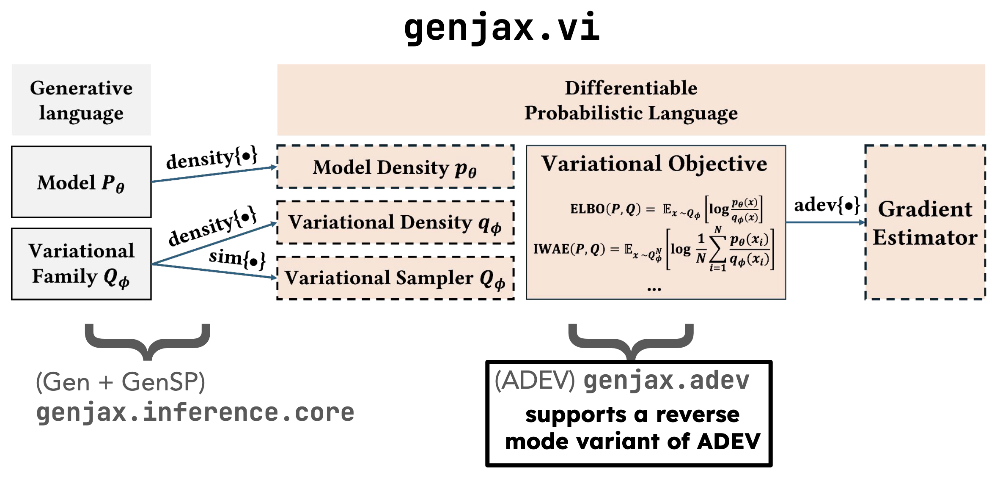

Conditioning probability distributions is a commonly desired operation, allowing users to express Bayesian inference problems. Conditioning is also a subroutine in other desired operations, like marginalization.
@Pytree.dataclassclassTarget(Generic[R],Pytree):""" A `Target` represents an unnormalized target distribution induced by conditioning a generative function on a [`genjax.ChoiceMap`][]. Targets are created by providing a generative function, arguments to the generative function, and a constraint. Examples: Creating a target from a generative function, by providing arguments and a constraint: ```python exec="yes" html="true" source="material-block" session="core" import genjax from genjax import ChoiceMapBuilder as C from genjax.inference import Target @genjax.gen def model(): x = genjax.normal(0.0, 1.0) @ "x" y = genjax.normal(x, 1.0) @ "y" return x target = Target(model, (), C["y"].set(3.0)) print(target.render_html()) ``` """p:Annotated[GenerativeFunction[R],Is[validate_non_marginal]]args:tuple[Any,...]constraint:ChoiceMapdefimportance(self,key:PRNGKey,constraint:ChoiceMap)->tuple[Trace[R],Weight]:merged=self.constraint.merge(constraint)returnself.p.importance(key,merged,self.args)deffilter_to_unconstrained(self,choice_map):selection=~self.constraint.get_selection()returnchoice_map.filter(selection)def__getitem__(self,addr):returnself.constraint[addr]
Algorithms inherit from a class called SampleDistribution - these are objects which implement the stochastic probability interface [Lew23], meaning they expose methods to produce samples and samples from density estimators for density computations.
The abstract class SampleDistribution represents the type of distributions whose return value type is a ChoiceMap. This is the abstract base class of Algorithm, as well as Marginal.
Algorithm families implement the stochastic probability interface. Their Distribution methods accept Target instances, and produce samples and density estimates for approximate posteriors.
Algorithm is the type of inference
algorithms: probabilistic programs which provide interfaces for sampling from
posterior approximations, and estimating densities.
The stochastic probability interface for Algorithm
Inference algorithms implement the stochastic probability interface:
Algorithm.random_weighted exposes sampling from the approximation
which the algorithm represents: it accepts a Target as input, representing the
unnormalized distribution, and returns a sample from an approximation to
the normalized distribution, along with a density estimate of the normalized distribution.
Algorithm.estimate_logpdf exposes density estimation for the
approximation which Algorithm.random_weighted samples from:
it accepts a value on the support of the approximation, and the Target which
induced the approximation as input, and returns an estimate of the density of
the approximation.
Optional methods for gradient estimators
Subclasses of type Algorithm can also implement two optional methods
designed to support effective gradient estimators for variational objectives
(estimate_normalizing_constant and estimate_reciprocal_normalizing_constant).
Given a Target, return a ChoiceMap from an approximation to the normalized distribution of the target, and a random Weight estimate of the normalized density of the target at the sample.
classAlgorithm(Generic[R],SampleDistribution):"""`Algorithm` is the type of inference algorithms: probabilistic programs which provide interfaces for sampling from posterior approximations, and estimating densities. **The stochastic probability interface for `Algorithm`** Inference algorithms implement the stochastic probability interface: * `Algorithm.random_weighted` exposes sampling from the approximation which the algorithm represents: it accepts a `Target` as input, representing the unnormalized distribution, and returns a sample from an approximation to the normalized distribution, along with a density estimate of the normalized distribution. * `Algorithm.estimate_logpdf` exposes density estimation for the approximation which `Algorithm.random_weighted` samples from: it accepts a value on the support of the approximation, and the `Target` which induced the approximation as input, and returns an estimate of the density of the approximation. **Optional methods for gradient estimators** Subclasses of type `Algorithm` can also implement two optional methods designed to support effective gradient estimators for variational objectives (`estimate_normalizing_constant` and `estimate_reciprocal_normalizing_constant`). """########## GenSP ##########@abstractmethoddefrandom_weighted(self,key:PRNGKey,*args:Any,)->tuple[Score,ChoiceMap]:""" Given a [`Target`][genjax.inference.Target], return a [`ChoiceMap`][genjax.core.ChoiceMap] from an approximation to the normalized distribution of the target, and a random [`Weight`][genjax.core.Weight] estimate of the normalized density of the target at the sample. The `sample` is a sample on the support of `target.gen_fn` which _are not in_ `target.constraints`, produced by running the inference algorithm. Let $T_P(a, c)$ denote the target, with $P$ the distribution on samples represented by `target.gen_fn`, and $S$ denote the sample. Let $w$ denote the weight `w`. The weight $w$ is a random weight such that $w$ satisfies: $$ \\mathbb{E}\\big[\\frac{1}{w} \\mid S \\big] = \\frac{1}{P(S \\mid c; a)} $$ This interface corresponds to **(Defn 3.2) Unbiased Density Sampler** in [[Lew23](https://dl.acm.org/doi/pdf/10.1145/3591290)]. """assertisinstance(args[0],Target)@abstractmethoddefestimate_logpdf(self,key:PRNGKey,v:ChoiceMap,*args:tuple[Any,...])->Score:""" Given a [`ChoiceMap`][genjax.core.ChoiceMap] and a [`Target`][genjax.inference.Target], return a random [`Weight`][genjax.core.Weight] estimate of the normalized density of the target at the sample. Let $T_P(a, c)$ denote the target, with $P$ the distribution on samples represented by `target.gen_fn`, and $S$ denote the sample. Let $w$ denote the weight `w`. The weight $w$ is a random weight such that $w$ satisfies: $$ \\mathbb{E}[w] = P(S \\mid c, a) $$ This interface corresponds to **(Defn 3.1) Positive Unbiased Density Estimator** in [[Lew23](https://dl.acm.org/doi/pdf/10.1145/3591290)]. """################# VI via GRASP #################@abstractmethoddefestimate_normalizing_constant(self,key:PRNGKey,target:Target[R],)->Weight:pass@abstractmethoddefestimate_reciprocal_normalizing_constant(self,key:PRNGKey,target:Target[R],latent_choices:ChoiceMap,w:Weight,)->Weight:pass
Given a Target, return a ChoiceMap from an approximation to the normalized distribution of the target, and a random Weight estimate of the normalized density of the target at the sample.
The sample is a sample on the support of target.gen_fn which are not intarget.constraints, produced by running the inference algorithm.
Let \(T_P(a, c)\) denote the target, with \(P\) the distribution on samples represented by target.gen_fn, and \(S\) denote the sample. Let \(w\) denote the weight w. The weight \(w\) is a random weight such that \(w\) satisfies:
@abstractmethoddefrandom_weighted(self,key:PRNGKey,*args:Any,)->tuple[Score,ChoiceMap]:""" Given a [`Target`][genjax.inference.Target], return a [`ChoiceMap`][genjax.core.ChoiceMap] from an approximation to the normalized distribution of the target, and a random [`Weight`][genjax.core.Weight] estimate of the normalized density of the target at the sample. The `sample` is a sample on the support of `target.gen_fn` which _are not in_ `target.constraints`, produced by running the inference algorithm. Let $T_P(a, c)$ denote the target, with $P$ the distribution on samples represented by `target.gen_fn`, and $S$ denote the sample. Let $w$ denote the weight `w`. The weight $w$ is a random weight such that $w$ satisfies: $$ \\mathbb{E}\\big[\\frac{1}{w} \\mid S \\big] = \\frac{1}{P(S \\mid c; a)} $$ This interface corresponds to **(Defn 3.2) Unbiased Density Sampler** in [[Lew23](https://dl.acm.org/doi/pdf/10.1145/3591290)]. """assertisinstance(args[0],Target)
Given a ChoiceMap and a Target, return a random Weight estimate of the normalized density of the target at the sample.
Let \(T_P(a, c)\) denote the target, with \(P\) the distribution on samples represented by target.gen_fn, and \(S\) denote the sample. Let \(w\) denote the weight w. The weight \(w\) is a random weight such that \(w\) satisfies:
\[
\mathbb{E}[w] = P(S \mid c, a)
\]
This interface corresponds to (Defn 3.1) Positive Unbiased Density Estimator in [Lew23].
@abstractmethoddefestimate_logpdf(self,key:PRNGKey,v:ChoiceMap,*args:tuple[Any,...])->Score:""" Given a [`ChoiceMap`][genjax.core.ChoiceMap] and a [`Target`][genjax.inference.Target], return a random [`Weight`][genjax.core.Weight] estimate of the normalized density of the target at the sample. Let $T_P(a, c)$ denote the target, with $P$ the distribution on samples represented by `target.gen_fn`, and $S$ denote the sample. Let $w$ denote the weight `w`. The weight $w$ is a random weight such that $w$ satisfies: $$ \\mathbb{E}[w] = P(S \\mid c, a) $$ This interface corresponds to **(Defn 3.1) Positive Unbiased Density Estimator** in [[Lew23](https://dl.acm.org/doi/pdf/10.1145/3591290)]. """
By virtue of the stochastic probability interface, GenJAX also exposes marginalization as a first class concept.
@Pytree.dataclassclassMarginal(Generic[R],SampleDistribution):"""The `Marginal` class represents the marginal distribution of a generative function over a selection of addresses. """gen_fn:GenerativeFunction[R]selection:Selection=Pytree.field(default=Selection.all())algorithm:Algorithm[R]|None=Pytree.field(default=None)defrandom_weighted(self,key:PRNGKey,*args:Any,)->tuple[Score,ChoiceMap]:key,sub_key=jax.random.split(key)tr=self.gen_fn.simulate(sub_key,args)choices:ChoiceMap=tr.get_choices()latent_choices=choices.filter(self.selection)key,sub_key=jax.random.split(key)bwd_request=~self.selectionweight=tr.project(sub_key,bwd_request)ifself.algorithmisNone:returnweight,latent_choiceselse:target=Target(self.gen_fn,args,latent_choices)other_choices=choices.filter(~self.selection)Z=self.algorithm.estimate_reciprocal_normalizing_constant(key,target,other_choices,weight)return(Z,latent_choices)defestimate_logpdf(self,key:PRNGKey,v:ChoiceMap,*args:tuple[Any,...],)->Score:ifself.algorithmisNone:_,weight=self.gen_fn.importance(key,v,args)returnweightelse:target=Target(self.gen_fn,args,v)Z=self.algorithm.estimate_normalizing_constant(key,target)returnZ
classSMCAlgorithm(Generic[R],Algorithm[R]):"""Abstract class for SMC algorithms."""@abstractmethoddefget_num_particles(self)->int:pass@abstractmethoddefget_final_target(self)->Target[R]:pass@abstractmethoddefrun_smc(self,key:PRNGKey,)->ParticleCollection[R]:pass@abstractmethoddefrun_csmc(self,key:PRNGKey,retained:ChoiceMap,)->ParticleCollection[R]:pass# Convenience method for returning an estimate of the normalizing constant# of the target.deflog_marginal_likelihood_estimate(self,key:PRNGKey,target:Target[R]|None=None,):iftarget:algorithm=ChangeTarget(self,target)else:algorithm=selfkey,sub_key=jrandom.split(key)particle_collection=algorithm.run_smc(sub_key)returnparticle_collection.get_log_marginal_likelihood_estimate()########## GenSP ##########defrandom_weighted(self,key:PRNGKey,*args:Any,)->tuple[Score,ChoiceMap]:assertisinstance(args[0],Target)target:Target[R]=args[0]algorithm=ChangeTarget(self,target)key,sub_key=jrandom.split(key)particle_collection=algorithm.run_smc(key)particle=particle_collection.sample_particle(sub_key)log_density_estimate=(particle.get_score()-particle_collection.get_log_marginal_likelihood_estimate())chm=target.filter_to_unconstrained(particle.get_choices())returnlog_density_estimate,chmdefestimate_logpdf(self,key:PRNGKey,v:ChoiceMap,*args:tuple[Any,...],)->Score:assertisinstance(args[0],Target)target:Target[R]=args[0]algorithm=ChangeTarget(self,target)key,sub_key=jrandom.split(key)particle_collection=algorithm.run_csmc(key,v)particle=particle_collection.sample_particle(sub_key)log_density_estimate=(particle.get_score()-particle_collection.get_log_marginal_likelihood_estimate())returnlog_density_estimate################# VI via GRASP #################defestimate_normalizing_constant(self,key:PRNGKey,target:Target[R],)->FloatArray:algorithm=ChangeTarget(self,target)key,sub_key=jrandom.split(key)particle_collection=algorithm.run_smc(sub_key)returnparticle_collection.get_log_marginal_likelihood_estimate()defestimate_reciprocal_normalizing_constant(self,key:PRNGKey,target:Target[R],latent_choices:ChoiceMap,w:FloatArray,)->FloatArray:algorithm=ChangeTarget(self,target)# Special, for ChangeTarget -- to avoid a redundant reweighting step,# when we have `w` which (with `latent_choices`) is already properly weighted# for the `target`.returnalgorithm.run_csmc_for_normalizing_constant(key,latent_choices,w)
Accepts as input a target: Target and, optionally, a proposal q: SampleDistribution.
q should accept a Target as input and return a choicemap on a subset
of the addresses in target.gen_fn not in target.constraints.
This initializes a 1-particle ParticleCollection by importance sampling from target using q.
Any choices in target.p not in q will be sampled from the internal proposal distribution of p,
given target.constraints and the choices sampled by q.
@Pytree.dataclassclassImportance(Generic[R],SMCAlgorithm[R]):"""Accepts as input a `target: Target` and, optionally, a proposal `q: SampleDistribution`. `q` should accept a `Target` as input and return a choicemap on a subset of the addresses in `target.gen_fn` not in `target.constraints`. This initializes a 1-particle `ParticleCollection` by importance sampling from `target` using `q`. Any choices in `target.p` not in `q` will be sampled from the internal proposal distribution of `p`, given `target.constraints` and the choices sampled by `q`. """target:Target[R]q:SampleDistribution|None=Pytree.field(default=None)defget_num_particles(self):return1defget_final_target(self):returnself.targetdefrun_smc(self,key:PRNGKey):key,sub_key=jrandom.split(key)ifself.qisnotNone:log_weight,choice=self.q.random_weighted(sub_key,self.target)tr,target_score=self.target.importance(key,choice)else:log_weight=0.0tr,target_score=self.target.importance(key,ChoiceMap.empty())returnParticleCollection(jtu.tree_map(lambdav:jnp.expand_dims(v,axis=0),tr),jnp.array([target_score-log_weight]),jnp.array(True),)defrun_csmc(self,key:PRNGKey,retained:ChoiceMap):key,sub_key=jrandom.split(key)ifself.q:q_score=self.q.estimate_logpdf(sub_key,retained,self.target)else:q_score=0.0target_trace,target_score=self.target.importance(key,retained)returnParticleCollection(jtu.tree_map(lambdav:jnp.expand_dims(v,axis=0),target_trace),jnp.array([target_score-q_score]),jnp.array(True),)
Given a target: Target and a proposal q: SampleDistribution, as well as the
number of particles k_particles: int, initialize a particle collection using
importance sampling.
@Pytree.dataclassclassImportanceK(Generic[R],SMCAlgorithm[R]):"""Given a `target: Target` and a proposal `q: SampleDistribution`, as well as the number of particles `k_particles: int`, initialize a particle collection using importance sampling."""target:Target[R]q:SampleDistribution|None=Pytree.field(default=None)k_particles:int=Pytree.static(default=2)defget_num_particles(self):returnself.k_particlesdefget_final_target(self):returnself.targetdefrun_smc(self,key:PRNGKey):key,sub_key=jrandom.split(key)sub_keys=jrandom.split(sub_key,self.get_num_particles())ifself.qisnotNone:log_weights,choices=vmap(self.q.random_weighted,in_axes=(0,None))(sub_keys,self.target)trs,target_scores=vmap(self.target.importance)(sub_keys,choices)else:log_weights=0.0trs,target_scores=vmap(self.target.importance,in_axes=(0,None))(sub_keys,ChoiceMap.empty())returnParticleCollection(trs,target_scores-log_weights,jnp.array(True),)defrun_csmc(self,key:PRNGKey,retained:ChoiceMap):key,sub_key=jrandom.split(key)sub_keys=jrandom.split(sub_key,self.get_num_particles()-1)ifself.q:log_scores,choices=vmap(self.q.random_weighted,in_axes=(0,None))(sub_keys,self.target)retained_choice_score=self.q.estimate_logpdf(key,retained,self.target)stacked_choices=jtu.tree_map(stack_to_first_dim,choices,retained)stacked_scores=jtu.tree_map(stack_to_first_dim,log_scores,retained_choice_score)sub_keys=jrandom.split(key,self.get_num_particles())target_traces,target_scores=vmap(self.target.importance)(sub_keys,stacked_choices)else:ignored_traces,ignored_scores=vmap(self.target.importance,in_axes=(0,None))(sub_keys,ChoiceMap.empty())retained_trace,retained_choice_score=self.target.importance(key,retained)target_scores=jtu.tree_map(stack_to_first_dim,ignored_scores,retained_choice_score)stacked_scores=0.0target_traces=jtu.tree_map(stack_to_first_dim,ignored_traces,retained_trace)returnParticleCollection(target_traces,target_scores-stacked_scores,jnp.array(True),)
Variational inference is an approach to inference which involves solving optimization problems over spaces of distributions. For a posterior inference problem, the goal is to find the distribution in some parametrized family of distributions (often called the guide family) which is close to the posterior under some notion of distance.
Variational inference problems typically involve optimization functions which are defined as expectations, and these expectations and their analytic gradients are often intractable to compute. Therefore, unbiased gradient estimators are used to approximate the true gradients.
The genjax.vi inference module provides automation for constructing variational losses, and deriving gradient estimators. The architecture is shown below.

Fig. 1: How variational inference works in GenJAX.
defadev_distribution(adev_primitive:ADEVPrimitive,differentiable_logpdf:Callable[...,Any],name:str)->ExactDensity[Any]:""" Return an [`ExactDensity`][genjax.ExactDensity] distribution whose sampler invokes an ADEV sampling primitive, with a provided differentiable log density function. Exact densities created using this function can be used as distributions in variational guide programs. """defsampler(key:PRNGKey,*args:Any)->Any:returnsample_primitive(adev_primitive,*args,key=key)deflogpdf(v:Any,*args:Any)->FloatArray:lp=differentiable_logpdf(v,*args)# Branching here is statically resolved.iflp.shape:returnjnp.sum(lp)else:returnlpreturnexact_density(sampler,logpdf,name)
defELBO(guide:SampleDistribution,make_target:Callable[...,Target[Any]],)->Callable[[PRNGKey,Arguments],GradientEstimate]:""" Return a function that computes the gradient estimate of the ELBO loss term. """defgrad_estimate(key:PRNGKey,args:tuple[Any,...],)->tuple[Any,...]:# In the source language of ADEV.@expectationdef_loss(*args):target=make_target(*args)guide_alg=Importance(target,guide)w=guide_alg.estimate_normalizing_constant(key,target)return-wreturn_loss.grad_estimate(key,args)returngrad_estimate
defIWELBO(proposal:SampleDistribution,make_target:Callable[[Any],Target[Any]],N:int,)->Callable[[PRNGKey,Arguments],GradientEstimate]:""" Return a function that computes the gradient estimate of the IWELBO loss term. """defgrad_estimate(key:PRNGKey,args:Arguments,)->GradientEstimate:# In the source language of ADEV.@expectationdef_loss(*args):target=make_target(*args)guide=ImportanceK(target,proposal,N)w=guide.estimate_normalizing_constant(key,target)return-wreturn_loss.grad_estimate(key,args)returngrad_estimate
defPWake(posterior_approx:SampleDistribution,make_target:Callable[[Any],Target[Any]],)->Callable[[PRNGKey,Arguments],GradientEstimate]:""" Return a function that computes the gradient estimate of the PWake loss term. """defgrad_estimate(key:PRNGKey,args:tuple[Any,...],)->tuple[Any,...]:key,sub_key1,sub_key2=jax.random.split(key,3)# In the source language of ADEV.@expectationdef_loss(*target_args):target=make_target(*target_args)_,sample=posterior_approx.random_weighted(sub_key1,target)tr,_=target.importance(sub_key2,sample)return-tr.get_score()return_loss.grad_estimate(key,args)returngrad_estimate
defQWake(proposal:SampleDistribution,posterior_approx:SampleDistribution,make_target:Callable[[Any],Target[Any]],)->Callable[[PRNGKey,Arguments],GradientEstimate]:""" Return a function that computes the gradient estimate of the QWake loss term. """defgrad_estimate(key:PRNGKey,args:tuple[Any,...],)->tuple[Any,...]:key,sub_key1,sub_key2=jax.random.split(key,3)# In the source language of ADEV.@expectationdef_loss(*target_args):target=make_target(*target_args)_,sample=posterior_approx.random_weighted(sub_key1,target)w=proposal.estimate_logpdf(sub_key2,sample,target)return-wreturn_loss.grad_estimate(key,args)returngrad_estimate